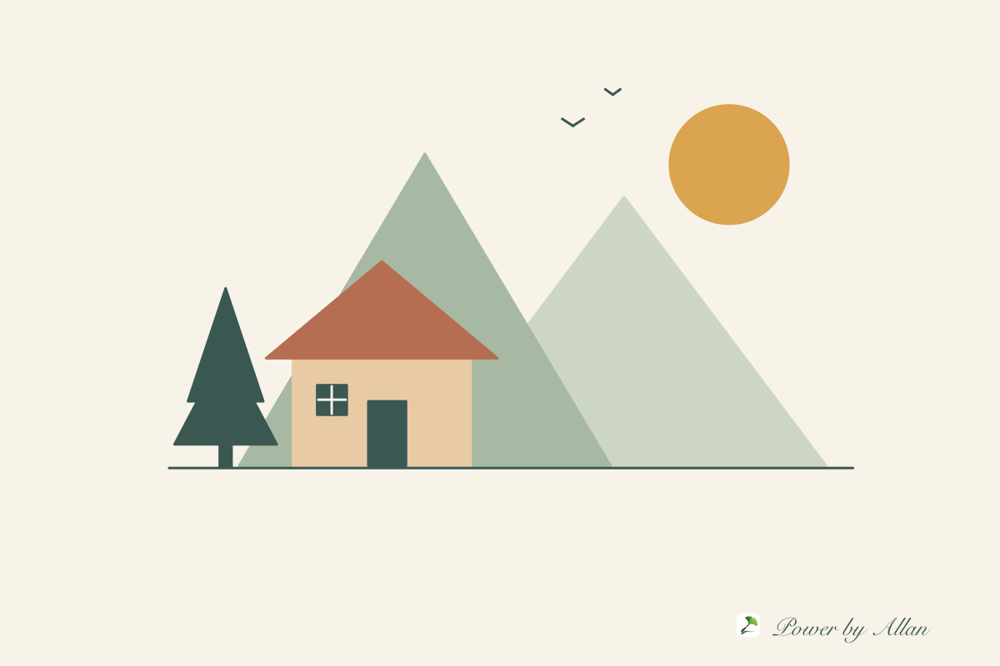

画笔 · 让灵感落在画布上1200 × 800 px

浏览器工具 WEB APP 1.0
轻绘SimplePaint
画几笔、写几个字，或者改张图片。熟悉的画笔、形状、填色和裁剪，打开浏览器就能用。图片在本地处理，画好后直接保存。
打开轻绘 ↗适合电脑浏览器 · 另有 macOS 原生版本Allan 的个人博客
把想法做成能用的小工具，也做成可以游玩的世界。
工具、小游戏和技术笔记，都慢慢放在这里。

画几笔、写几个字，或者改张图片。熟悉的画笔、形状、填色和裁剪，打开浏览器就能用。图片在本地处理，画好后直接保存。
打开轻绘 ↗适合电脑浏览器 · 另有 macOS 原生版本从一辆小小的自行车出发，驶过春夏秋冬。躲避车流、收集氮气，在不断延伸的道路上，看看自己能走多远。
开始旅途 ↗适合电脑浏览器 · 使用方向键与空格操作在星空中练单词：电脑上交替挑战字母空战与碎片组装，手机上点选碎片、连接陨石。从小六到六级，先预习，再闯关，最后回顾错题。
向星海启航 ↗电脑使用键盘与鼠标 · 手机触屏点选，无需打字坐进驾驶舱，从深圳准备起飞，掠过河流、城市与群山。沿着四条逐步延长的航线练习操纵，在旅途中熟悉键盘，最后平稳着陆。
准备起飞 ↗适合电脑浏览器 · 使用字母键、方向键与空格操作这里还没有文章，先放几张示意图，给未来的实践和思考留一点位置。
页面、状态与日常开发中的小问题。
暂无文章画布、三维场景和有趣的交互实验。
暂无文章把重复的步骤，变成顺手的开发习惯。
暂无文章A LITTLE ABOUT THIS SPACE
喜欢写代码，也喜欢把有趣的想法做出来。
这里放着自己做的小工具、小游戏，以及慢慢积累的技术记录。不着急填满，想到什么，就认真做一点。
用「轻绘」画几笔；在「四季车途」里旅行，在「英语空战」里练单词，或是坐进「低空穿越」的驾驶舱，向远方出发。
去玩四季车途 ↗